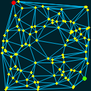
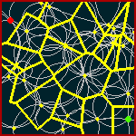
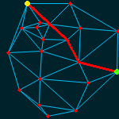
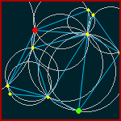

A web application for comparing online routing algorithms on Deluanay triangulations in PHP




Midpoint, Two-Step and Apex Angle algorithms described in:
Weisheng Si, Albert Y. Zomaya, "New Memoryless Online Routing Algorithms for
Delaunay Triangulations," IEEE Transactions on Parallel and Distributed Systems,
vol. 23, no. 8, pp. 1520-1527, Aug., 2012